Regression comparison
Download resultsAggregation weights
\widehat y(x)=y_{\rm mean}+y_{\rm std}\sum_{h=1}^{H}\beta_h\mu_h(x)Coefficients can be negative and need not sum to one. Intervals describe coefficient uncertainty; the dashed reference is DE’s fixed 1/H weight.
BDKN


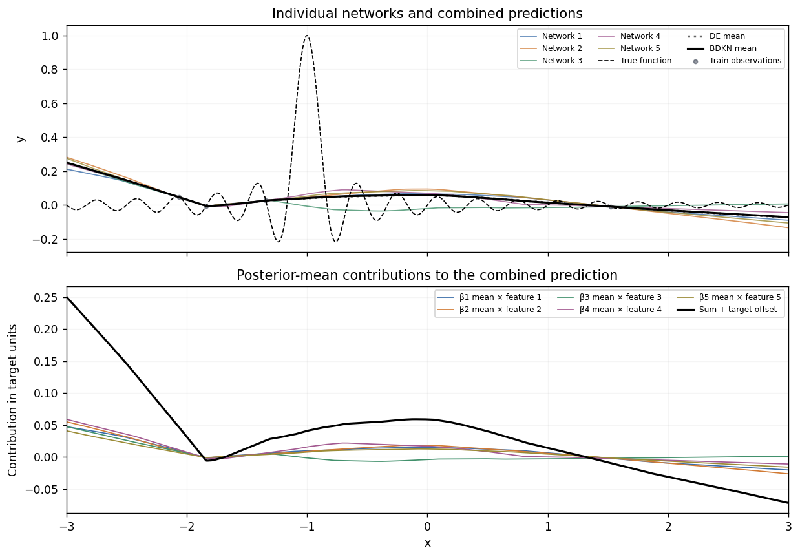
Each density panel uses its own X range for readability; coefficient intervals above share a common axis. Prior reference conditions on fitted noise. Contribution shares use held-out inputs; test targets are used only for scoring.
| Network | β mean | 95% low | 95% high | P(β > 0) | Contribution share | Test RMSE | Test NLL |
|---|---|---|---|---|---|---|---|
| 1 | 0.22455 | -0.37810 | 0.82721 | 0.82033 | 0.23201 | 0.18210 | 804.83344 |
| 2 | 0.19524 | -0.41183 | 0.80230 | 0.78882 | 0.25037 | 0.19040 | 1165.62672 |
| 3 | 0.19074 | -0.40289 | 0.78436 | 0.78862 | 0.11231 | 0.18708 | 295.28098 |
| 4 | 0.24410 | -0.34753 | 0.83573 | 0.84207 | 0.22744 | 0.17958 | 1034.70615 |
| 5 | 0.14857 | -0.43568 | 0.73282 | 0.74044 | 0.17788 | 0.18625 | 714.88349 |
Functional repulsion · BDKN
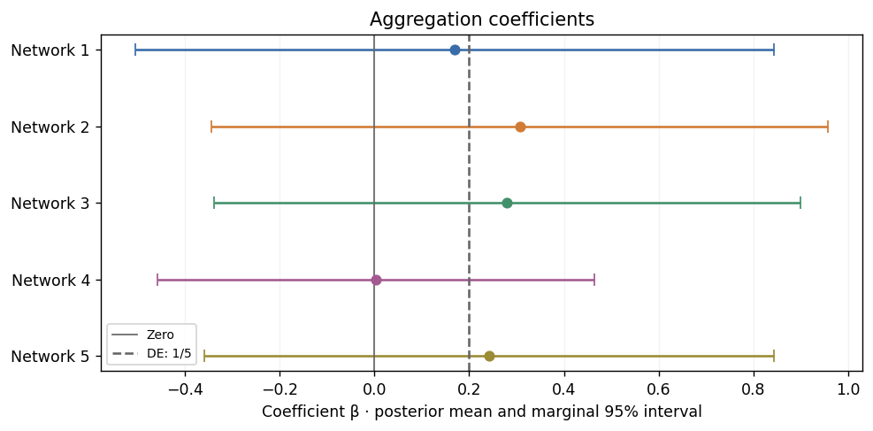
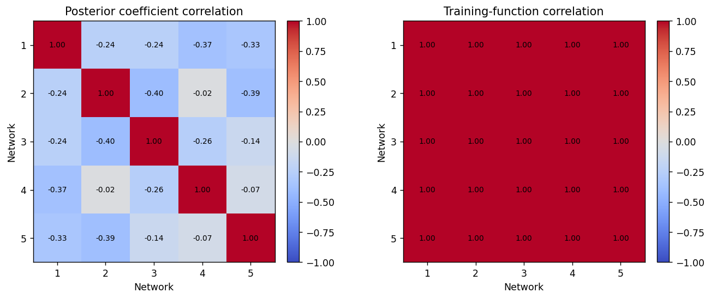
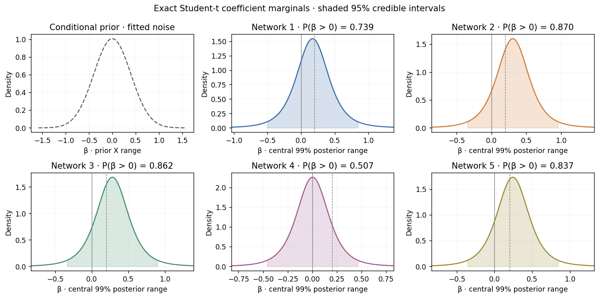
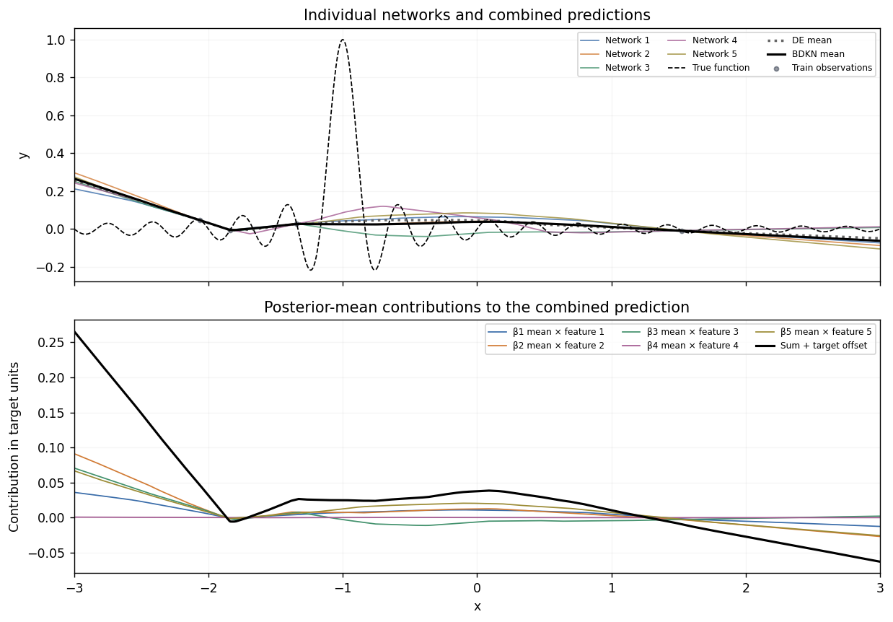
Each density panel uses its own X range for readability; coefficient intervals above share a common axis. Prior reference conditions on fitted noise. Contribution shares use held-out inputs; test targets are used only for scoring.
| Network | β mean | 95% low | 95% high | P(β > 0) | Contribution share | Test RMSE | Test NLL |
|---|---|---|---|---|---|---|---|
| 1 | 0.17012 | -0.50390 | 0.84413 | 0.73896 | 0.18055 | 0.18112 | 120.76370 |
| 2 | 0.30704 | -0.34372 | 0.95780 | 0.86981 | 0.31268 | 0.18847 | 1035.51786 |
| 3 | 0.28033 | -0.33840 | 0.89905 | 0.86158 | 0.18643 | 0.18781 | 440.83121 |
| 4 | 0.00307 | -0.45823 | 0.46438 | 0.50694 | 0.00294 | 0.17682 | 289.75768 |
| 5 | 0.24239 | -0.35890 | 0.84367 | 0.83714 | 0.31739 | 0.18620 | 660.95070 |
Weight repulsion · BDKN
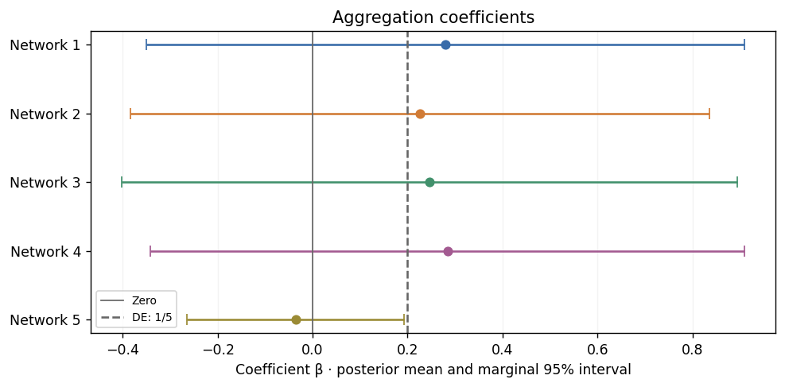
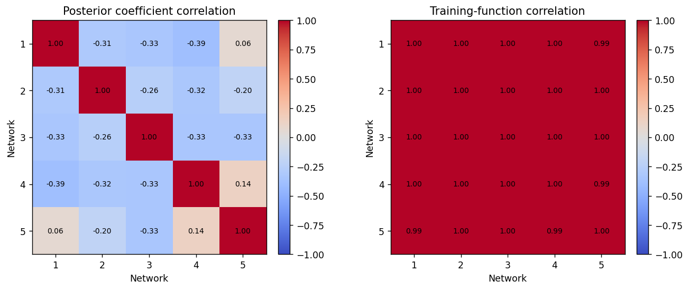
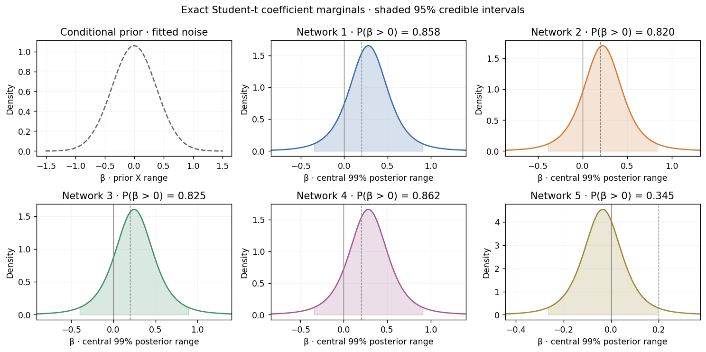
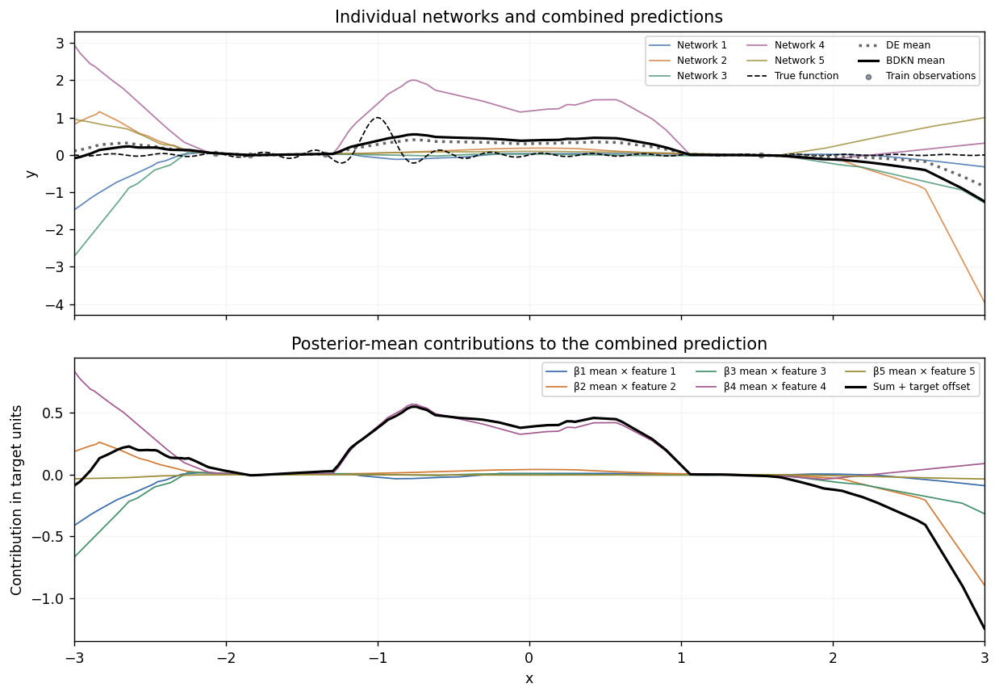
Each density panel uses its own X range for readability; coefficient intervals above share a common axis. Prior reference conditions on fitted noise. Contribution shares use held-out inputs; test targets are used only for scoring.
| Network | β mean | 95% low | 95% high | P(β > 0) | Contribution share | Test RMSE | Test NLL |
|---|---|---|---|---|---|---|---|
| 1 | 0.27959 | -0.34961 | 0.90879 | 0.85758 | 0.08314 | 0.32062 | 15586.10823 |
| 2 | 0.22661 | -0.38332 | 0.83655 | 0.81972 | 0.20529 | 0.74175 | 88173.87556 |
| 3 | 0.24629 | -0.40141 | 0.89398 | 0.82468 | 0.16661 | 0.56539 | 43752.34431 |
| 4 | 0.28419 | -0.34166 | 0.91004 | 0.86204 | 0.52441 | 0.98700 | 10951.74557 |
| 5 | -0.03536 | -0.26406 | 0.19334 | 0.34491 | 0.02055 | 0.39432 | 4591.49765 |
First-order repulsion · BDKN
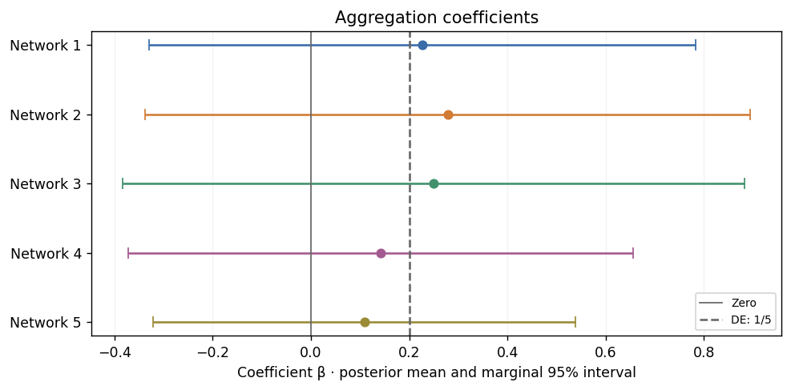
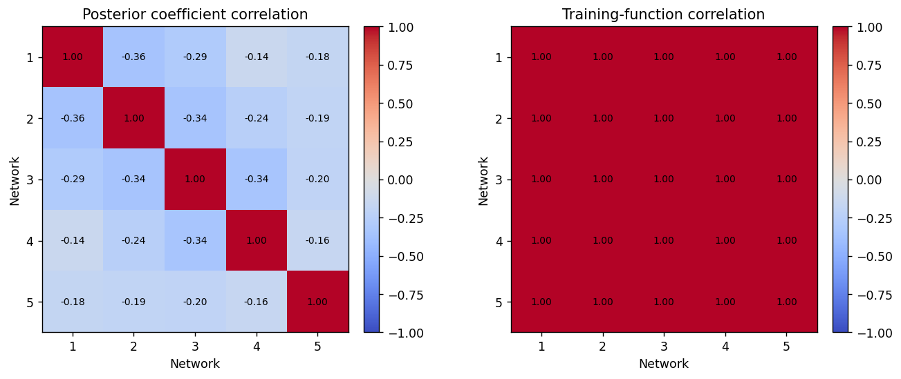
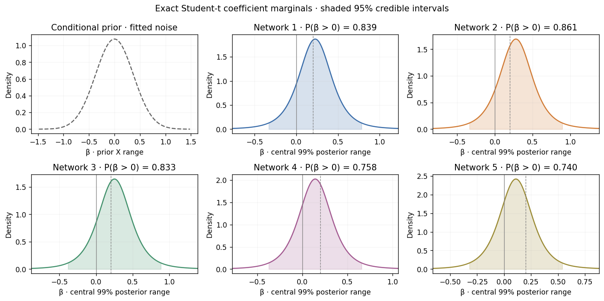
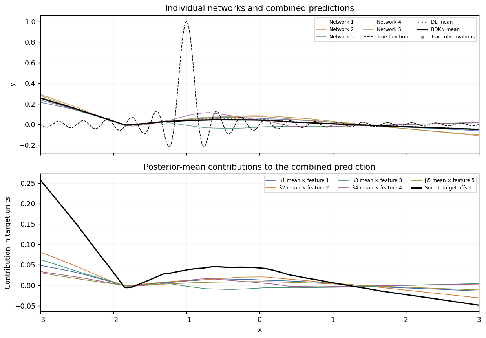
Each density panel uses its own X range for readability; coefficient intervals above share a common axis. Prior reference conditions on fitted noise. Contribution shares use held-out inputs; test targets are used only for scoring.
| Network | β mean | 95% low | 95% high | P(β > 0) | Contribution share | Test RMSE | Test NLL |
|---|---|---|---|---|---|---|---|
| 1 | 0.22659 | -0.33017 | 0.78336 | 0.83917 | 0.22474 | 0.18028 | 141.97414 |
| 2 | 0.27858 | -0.33732 | 0.89447 | 0.86123 | 0.33978 | 0.18819 | 1270.67740 |
| 3 | 0.25021 | -0.38276 | 0.88318 | 0.83298 | 0.16945 | 0.18784 | 403.72177 |
| 4 | 0.14221 | -0.37149 | 0.65592 | 0.75751 | 0.12826 | 0.17615 | 284.09498 |
| 5 | 0.10912 | -0.32064 | 0.53887 | 0.74014 | 0.13778 | 0.18663 | 216.54095 |